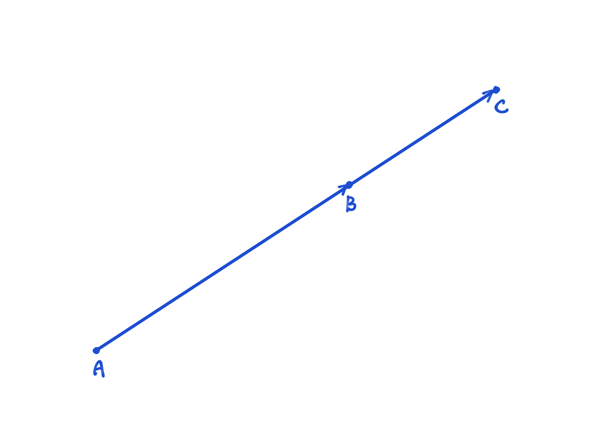
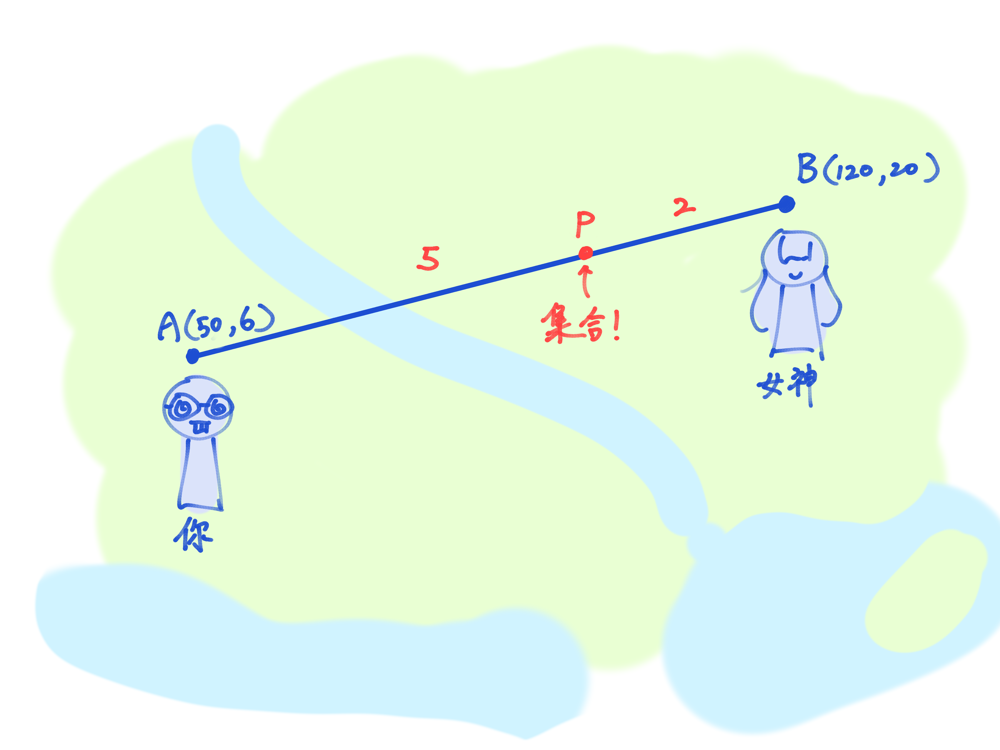
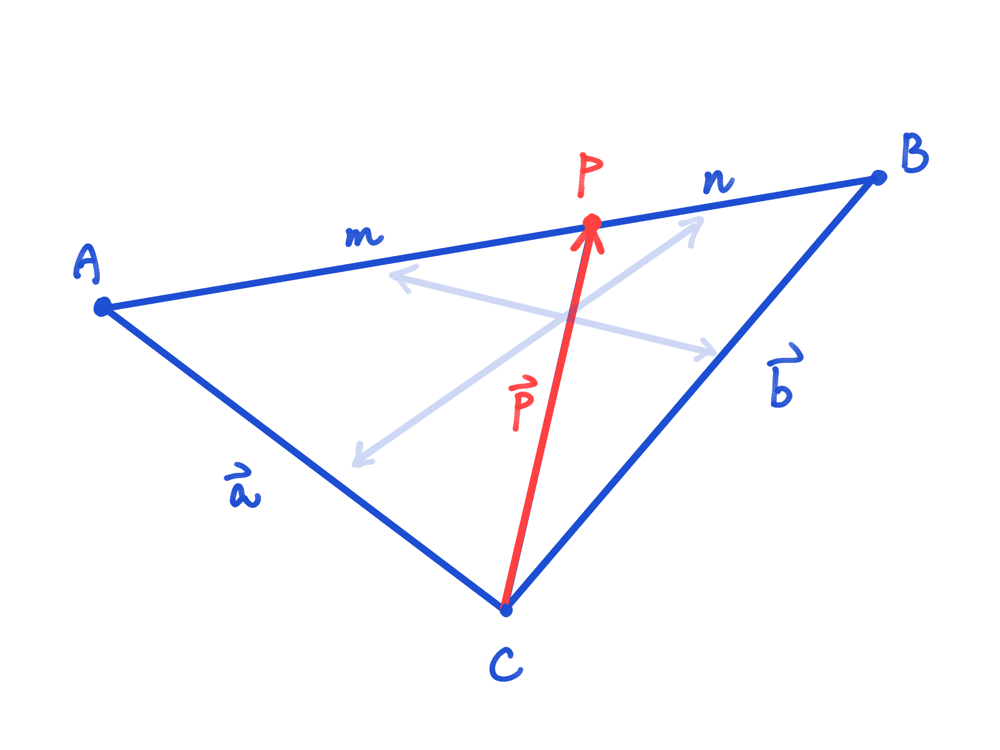
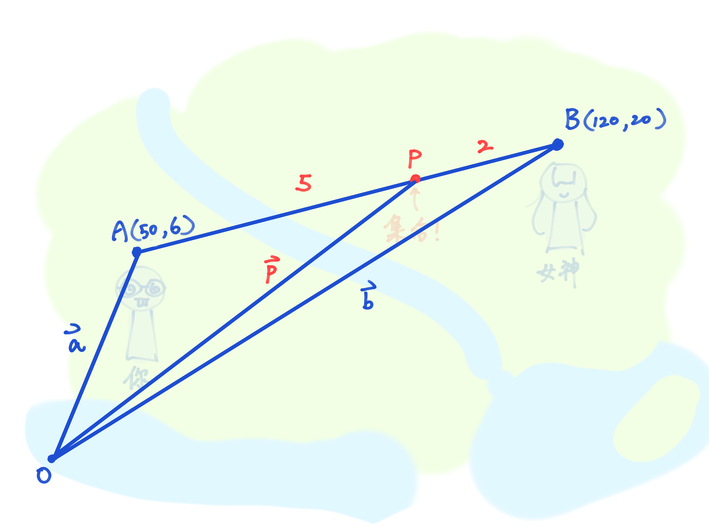
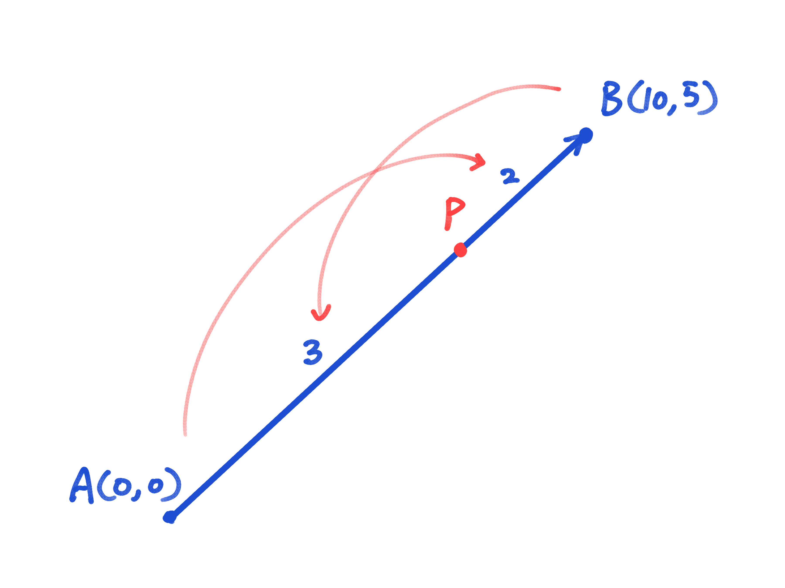
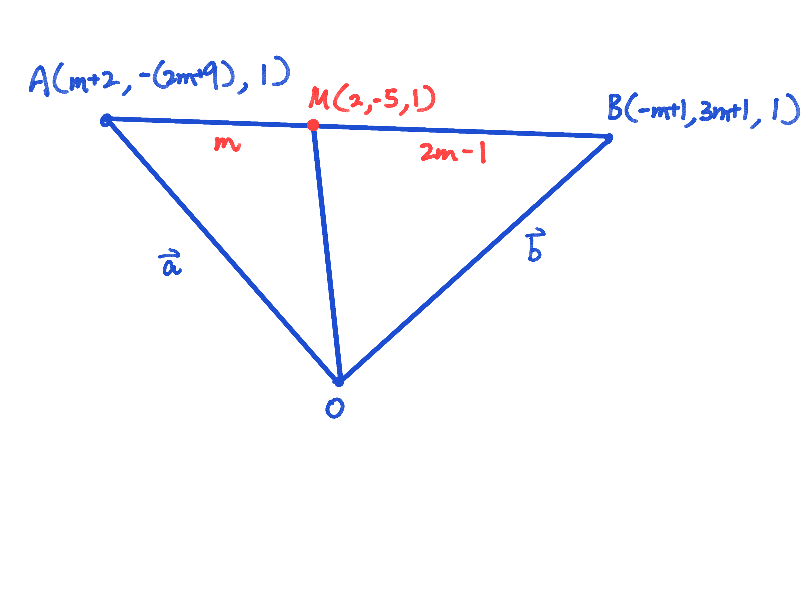

平行與線段的分割 Parallelism and Division of a Line Segment
1 平行 Parallel
咩係平行呢？咪就係方向一致咯。我同你深情對望，彼此一起走向遠方...
而 vector 世界入面嘅平行，其實就係一支 vector 可以寫成另一支 vector 嘅倍數啦~
試吓拖動 $\mathbf{v}$ 直到佢同 $\mathbf{u}$ 平行~
Let $\mathbf{u}$ and $\mathbf{v}$ be two vectors. Then $\mathbf{u}$ and $\mathbf{v}$ are parallel if and only if
$$ \mathbf{v} = k \mathbf{u} \quad \text{for some scalar } k. $$In other words, if $\mathbf{u} = n_1 \mathbf{a} + n_2 \mathbf{b} + n_3 \mathbf{c}$ is parallel to $\mathbf{v} = m_1 \mathbf{a} + m_2 \mathbf{b} + m_3 \mathbf{c}$, then:
$$\frac{n_1}{m_1} = \frac{n_2}{m_2} = \frac{n_3}{m_3},$$where $\mathbf{a}, \mathbf{b}, \mathbf{c}$ are non-zero and non-parallel vectors and $n_j,m_j$ are non-zero scalars.
其實就係靠 similar triangles 啦~
Let ${\bf a}$ and ${\bf b}$ be two non-parallel vectors. Given that $2{\bf a} + 3{\bf b}$ is parallel to $4{\bf a} + k{\bf b}$, find the value of $k$.
SolutionBy Definition 1.1, we have:
$$ \frac{2}{4} = \frac{3}{k} \implies k = 6 $$Is $\mathbf{0}$ parallel to $\mathbf{v}$, where $\mathbf{v}$ is any vector?
共線 Collinearity
就好似 core 中 collinear 要 $AB//AC$，vector 世界入面嘅 collinear 都有一樣嘅條件（你唔通 expect 咩？）。
Let $A, B, C$ be three distinct points. Then $A, B, C$ are collinear if and only if
$$ \overrightarrow{AB} = k \overrightarrow{AC} \quad \text{for some scalar } k. $$
If $0 < k < 1$, then $C$ lies between $A$ and $B$.
咁如果 $k > 1$ 會係點呢？$k < 0$ 呢？自己畫個圖睇吓啦~
Let $A = (1, 2)$, $B = (3, 6)$, and $C = (4, 8)$. Determine whether $A, B, C$ are collinear.
Solution $$ \overrightarrow{AB} = (3-1, 6-2) = (2, 4) $$ $$ \overrightarrow{AC} = (4-1, 8-2) = (3, 6) $$Assume $\overrightarrow{AC}$ = $k \overrightarrow{AB}$, where $k \in \mathbb{R}$:
$$ (3, 6) = k(2, 4) \implies \begin{cases} 3 = 2k \\ 6 = 4k \end{cases} \implies k = \frac{3}{2} $$Since $\overrightarrow{AC} = \dfrac{3}{2} \overrightarrow{AB}$, the points $A, B, C$ are collinear.
Let $A = (1, 2)$, $B = (3, 6)$, and $C = (5, 5)$. Determine whether $A, B, C$ are collinear.
Compute the vectors:
$$ \overrightarrow{AB} = (2, 4), \quad \overrightarrow{AC} = (4, 3) $$Assume $(4, 3) = k(2, 4)$, where $k \in \mathbb{R}$:
From the first coordinate: $4 = 2k \implies k = 2$.
From the second coordinate: $3 = 4k \implies k = \dfrac{3}{4}$.
Since the values do not agree, no such $k$ exists. Therefore $A, B, C$ are not collinear.
If $\overrightarrow{AB} = -\overrightarrow{AC}$, then
2 線段的分割 Division of a Line Segment
想象一下，你歷經千辛萬苦，終於約到你嘅女神出街啦。不過你哋兩個住得都幾遠吓，應該約邊度集合呢？
你都讀得 M2 啦，身為人生失敗組嘅你，點敢叫偉大嘅女神係中間集合呢？不過你又無可能直接去佢屋企接佢，咁就一於搵個近近地佢嘅地方，like say $5:2$ 啦。你 $5$ 步佢 $2$ 步！

咁要點搵 $P$ 點嘅坐標呢？
係 core 入面有一條你好有可能已經唔記得咗嘅公式，Section formula：
$$P(x, y) = \left( \frac{mx_2 + nx_1}{m + n}, \frac{my_2 + ny_1}{m + n} \right)$$不過我哋今日嘅主角唔係佢。係佢嘅表哥，Vector Section Formula。
Let $C$ be a arbitraty point in space. Let $\overrightarrow{CA} = {\bf a}$, $\overrightarrow{CB} = {\bf b}$, and $\overrightarrow{CP} = {\bf p}$.
If $P$ is a point on $AB$ such that $AP : PB = m : n$, then:
$$ {\bf p} = \frac{n{\bf a} + m{\bf b}}{m + n} $$
Special case: If $P$ is the midpoint of $AB$ (i.e. $m = n$), then:
$$ {\bf p} = \frac{{\bf a} + {\bf b}}{2} $$We have
$$\frac{\overrightarrow{AP}}{m} = \frac{\overrightarrow{PB}}{n}$$ $$n(\mathbf{p}-\mathbf{a}) = m(\mathbf{b} - \mathbf{p})$$ $$\mathbf{p} = \frac{n\mathbf{a} + m\mathbf{b}}{m + n}$$認住呢種有比例嘅叉開三角形！一見到呢種 form，直接交叉相乘搵中間就得啦~
今次我哋要搵嘅係坐標，所以參考點就會係 $O$：

Let $A = (0, 0)$ and $B = (10, 5)$. Point $P$ divides $AB$ internally such that $AP : PB = 3 : 2$. Find the coordinates of $P$.

Let $\overrightarrow{OA} = (m + 2)\mathbf{i} - (2m + 9)\mathbf{j} + \mathbf{k}$, $\overrightarrow{OB} = (-m + 1)\mathbf{i} + (3m + 1)\mathbf{j} + \mathbf{k}$ and $\overrightarrow{OM} = 2\mathbf{i} - 5\mathbf{j} + \mathbf{k}$. If $M$ divides $\overrightarrow{AB}$ in the ratio of $m : (2m - 1)$, find the value of $m$.
By the section formula, if $M$ divides $AB$ internally in the ratio $AM : MB = m : (2m - 1)$, then:
$$ \overrightarrow{OM} = \frac{(2m - 1) \overrightarrow{OA} + m \overrightarrow{OB}}{m + (2m - 1)} = \frac{(2m - 1) \overrightarrow{OA} + m \overrightarrow{OB}}{3m - 1} $$
Substitute the given vectors:
$$ \overrightarrow{OM} = \frac{(2m - 1)\left[(m + 2)\mathbf{i} - (2m + 9)\mathbf{j} + \mathbf{k}\right] + m\left[(-m + 1)\mathbf{i} + (3m + 1)\mathbf{j} + \mathbf{k}\right]}{3m - 1} $$We are also given $\overrightarrow{OM} = 2\mathbf{i} - 5\mathbf{j} + \mathbf{k}$. Compare the coefficients of $\mathbf{i}$:
$$ 2 = \frac{(2m - 1)(m + 2) + m(-m + 1)}{3m - 1} $$ $$ 2(3m - 1) = (2m^2 + 3m - 2) + (-m^2 + m) $$ $$ 6m - 2 = m^2 + 4m - 2 \implies 6m - 2 - 4m + 2 = m^2 $$ $$ 2m = m^2 \implies m^2 - 2m = 0 \implies m(m - 2) = 0 $$Hence $m = 0$ or $m = 2$. However, the ratio $m : (2m - 1)$ must be positive.
- If $m = 0$, the ratio becomes $0 : (-1)$, which is not valid.
- If $m = 2$, the ratio becomes $2 : 3$, which is valid.
Therefore, $m = 2$.